|
SDOM - Simple SDL Document Object Model
A lightweight, extensible Document Object Model for SDL-based applications.
|
The Display Object Anchoring System defines layout in SDOM by anchoring each of a child’s four edges to any of nine reference points on its parent (top/middle/bottom × left/center/right). Each edge has its own anchor and local offset (left_, right_, top_, bottom_), so objects can pin, center, or stretch asymmetrically as parents move or resize. World-space geometry is derived from edges—width = right − left and height = bottom − top—yielding predictable, resolution‑independent layout.
When anchors change, the system preserves visual stability. Changing an anchor recalculates only the corresponding local offset so the world position of that edge does not move. The same invariant powers drag‑and‑drop and reparenting: record the world edges, apply the new parent/anchors, then resolve new local offsets from the new parent’s anchor references. This makes interactive editing and runtime scene changes smooth, enabling fixed margins, edge‑to‑edge stretching, and center‑based alignment without jumps.
The API exposes clear accessors for per‑edge anchors and offsets, with sensible defaults that keep existing content working (top‑left if unspecified). Configuration can be supplied in code, via Lua scripts during initialization or at runtime, or from external data; names map directly onto the nine‑point grid with convenient aliases. Because anchoring is edge‑based and hierarchical, complex layouts compose naturally: nested children inherit motion from ancestors yet retain precise rules for how each edge follows the parent. The result is a compact, robust model that behaves well under resizing, scaling, and scene swaps.
AnchorPoint::TOP_LEFT, AnchorPoint::TOP_CENTER, AnchorPoint::TOP_RIGHT, AnchorPoint::MIDDLE_LEFT, AnchorPoint::MIDDLE_CENTER, AnchorPoint::MIDDLE_RIGHT, AnchorPoint::BOTTOM_LEFT, AnchorPoint::BOTTOM_CENTER, AnchorPoint::BOTTOM_RIGHT."top_left", "middle_center", etc. The mapping is direct and bindings accept either the enum or a string alias.left_, right_, top_, bottom_.setLeft, setRight, setTop, setBottom, getLeft, getRight, getTop, getBottom.getLeft() = parent_anchor_x + left_getRight() = parent_anchor_x + right_getTop() = parent_anchor_y + top_getBottom() = parent_anchor_y + bottom_parent_anchor_x and parent_anchor_y are determined by the parent's anchor reference for the respective edge.width = getRight() - getLeft()height = getBottom() - getTop()setAnchorLeft(AnchorPoint ap)setAnchorRight(AnchorPoint ap)setAnchorTop(AnchorPoint ap)setAnchorBottom(AnchorPoint ap)getAnchorLeft(), getAnchorRight(), getAnchorTop(), getAnchorBottom()left_, right_, etc.) is recalculated so the world position of the edge does not move.getLeft(), getRight(), getTop(), getBottom()) before changing parent or anchor.This document describes the anchor point system for positioning and sizing display objects in the SDOM API. Anchoring enables flexible, responsive layouts by allowing each display object to reference its position and size to any of nine anchor points on its parent.
Each display object can specify anchor points for its four edges (left/X, top/Y, right/width, bottom/height) in relation to its parent. The nine possible anchor points are:
top_lefttop_centertop_rightmiddle_leftmiddle_centermiddle_rightbottom_leftbottom_centerbottom_rightcenter_middleright_middleleft_middlecenter_topright_topleft_topcenter_bottomright_bottomleft_bottomFor convenience, aliases like left, center, right, top, middle, and bottom are also supported.
Anchor points are typically provided from Lua modules or from code. For configuration files, prefer a small Lua module that returns a table. If anchor fields are omitted, anchors default to top_left.
Example Lua module (config/layout.lua):
C++ (Sol2) usage to load the module and configure an object:
For example:
When an anchor point is changed, the offset is recalculated so the display object remains visually in the same position and size. This ensures a smooth user experience and prevents layout jumps.
Anchor calculations are recursive: each display object references its parent, which may itself be anchored to its own parent, up to the stage. This enables complex, nested layouts.
Existing code that sets anchors programmatically remains compatible. Configuration files that used JSON should be converted to Lua modules (small one-to-one mappings) — see the Migration note below.
This anchor system makes SDOM display objects highly flexible and professional, supporting modern UI layout needs.
SVG (static image): 
Key idea: each edge uses its own parent anchor reference plus a local offset; width/height derive from right-left and bottom-top.
SVG (static image):
This flow illustrates the invariant maintained during anchor changes: the world edge position remains the same while only the corresponding local offset is updated.
Bindings accept both enumerated values and string names. A small C++ helper simplifies mapping user-facing strings to enums; expose this to Lua so scripts can use readable names.
Expose parseAnchor to Lua via your usual binding so scripts can call parseAnchor("left") or pass strings directly where supported.
{ "child_anchor_x": "left" } maps to Lua child_anchor_x = "left" in a module that returns a table..lua modules is helpful. If runtime JSON parsing is required, add a Lua JSON library to your project — SDOM does not bundle one by default.